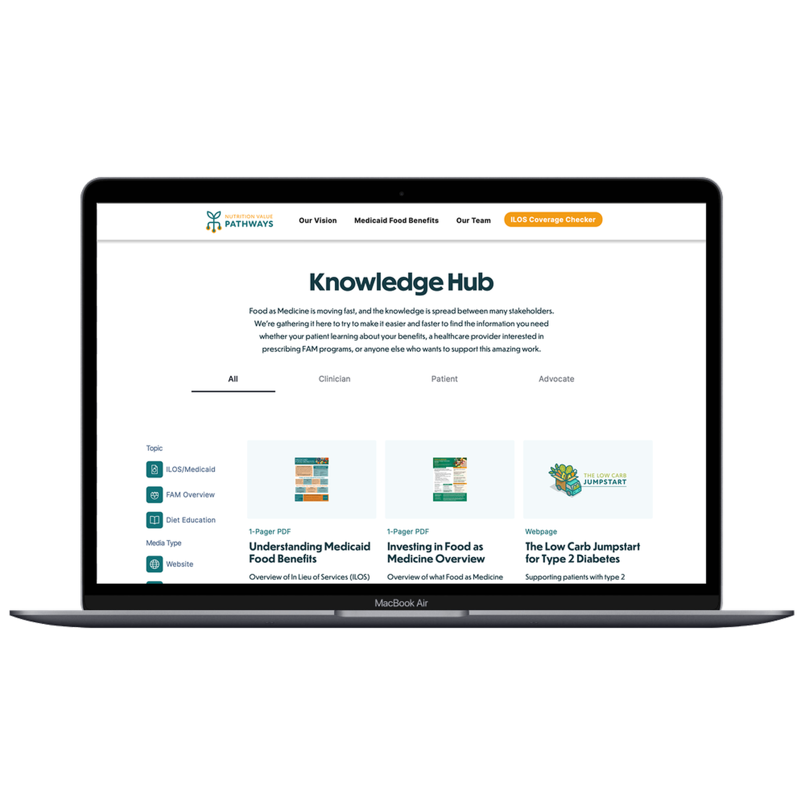
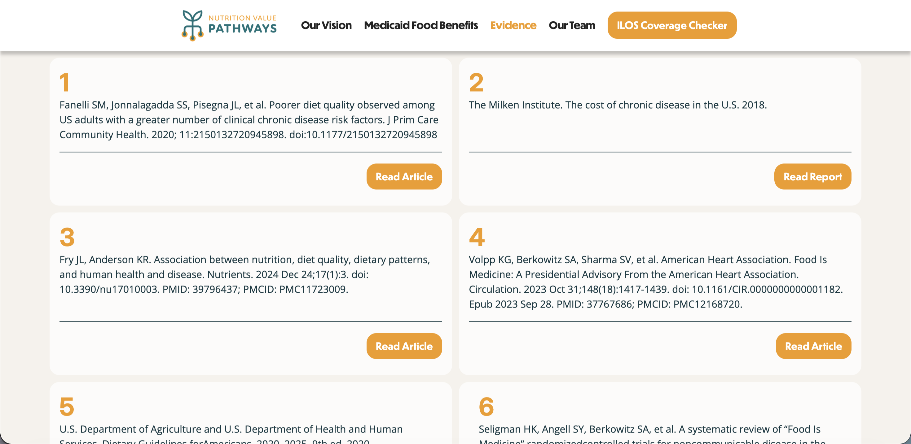
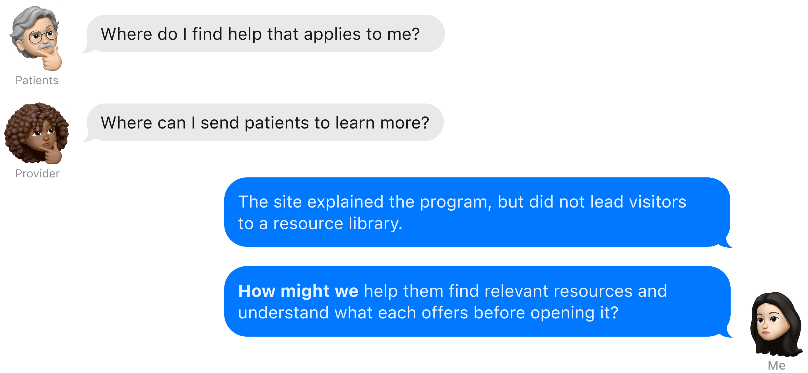
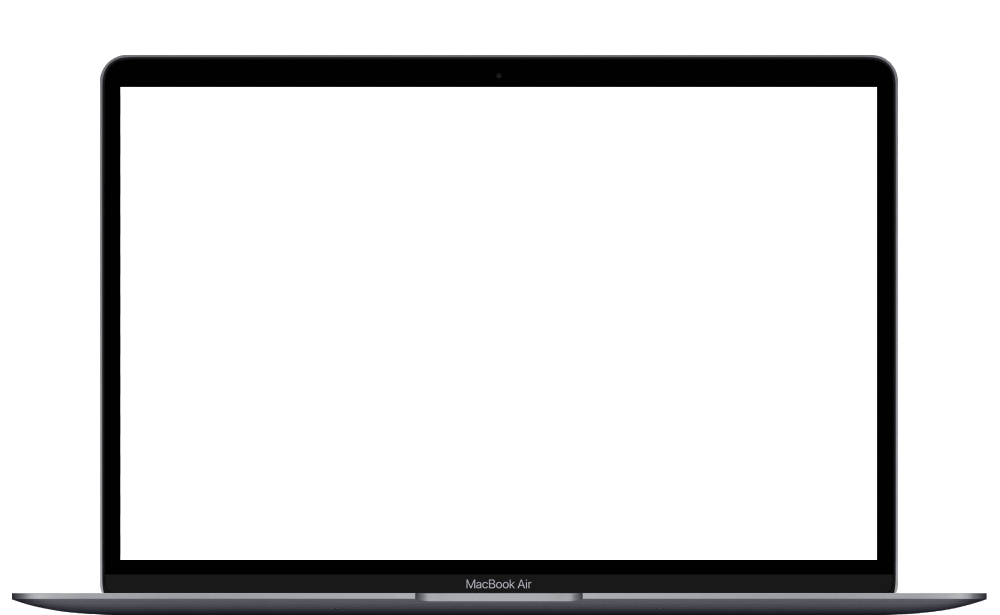

Nutrition Benefits Resource Hub
A web experience for finding resources related to food and nutrition benefits.

Problem
The existing site explained that nutrition benefits were available, but gave visitors no clear way to find resources relevant to them.
Solution
I designed a filterable resource hub that helps visitors browse and narrow the available resources.
Background
Nutrition Value Pathways
Health Behaviors and Outcomes Mentorship (HBOM) developed Nutrition Value Pathways (NVP) as a University of Michigan initiative connecting people with nutrition benefits. NVP estimates annual healthcare savings of 85,000+ hospitalizations and $1,800+ per enrolled Michigander.
NVP explains In Lieu of Services (ILOS), Medicaid benefits that can provide nutrition support such as medically tailored meals, healthy food packs, and produce prescriptions. Its website also included a coverage checker that helped visitors check available benefits by plan and region.
I designed the resource hub for the NVP website.
Research
Identifying Problem
The NVP site explained ILOS coverage, benefit types, and the evidence behind the program. But after checking coverage, visitors had no clear place to find resources they could use or share.

Through interview content audit and secondary research, I reviewed how patients and providers might use shared health information. This identified two core use cases: patients looking for understandable information about food benefits, and providers looking for materials to learn from or share.

I was assigned to design the hub in Figma. After completing the information architecture and wireframes early, I proposed extending the work into a Webflow CMS implementation.
Research
Competitive Audit
I compared existing food and health resource sites to understand how they organize resources and support browsing.

The review showed that visitors needed a clearer starting point and more context before opening a resource. These findings informed the hub’s filters and resource-card design.
Ideation
Design decisions
01. Filter placement
Challenge: Visitors needed to narrow resources, while filters had to stay visible as categories grew.
Side and top filters solved different parts of the problem. I developed both directions and presented their trade-offs to the project team in a comparative evaluation. We combined them in the final layout: a top filter for visibility and a side filter for depth.

02. Resource detail layout
Challenge: The page needed to support both reading and requesting resources without letting either compete with the other.
I explored two ways to place the request form alongside the resource. A comparative evaluation with the project team showed the full-width layout kept the resource easier to focus on, so I moved the form below the content.

03. Resource cards
Challenge: Visitors needed enough context to judge a resource before opening it.
I designed eight card variations, each with a different information hierarchy and use case. After preference testing with the project team, I developed the preferred direction further and kept the resource type, source, and reading time visible before the click.

Final Solution
Inside the Hub

Non-gating filters
Visitors can enter through a user type, topic, or media type. “All” stays selected by default, so people with overlapping needs can browse without choosing a label first.

One form, two paths
The same form supports both requesting a resource and suggesting one.

Information before the click
Each resource includes its source, format, reading time, and last-updated date so visitors can decide whether it is worth opening.
Final Solution
Webflow build
Walkthrough from filtering to opening a resource.

Reflection
Learnings
Reflection: The main challenge was not only deciding how the hub should look, but what each resource needed to communicate before someone opened it. Resource type, source, reading time, and audience became part of the interface rather than background content.
Moving from Figma into Webflow changed how I worked. I had to think about CMS fields, reusable content, and how the design would hold as more resources were added.